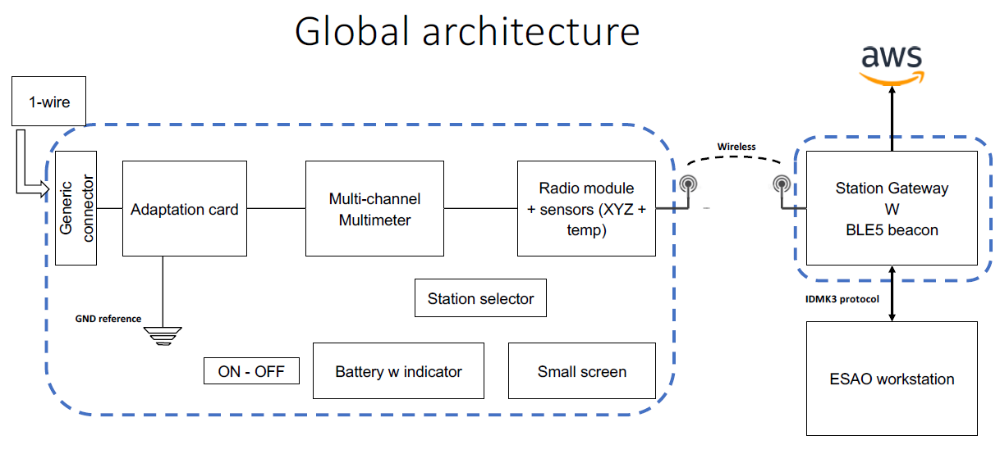
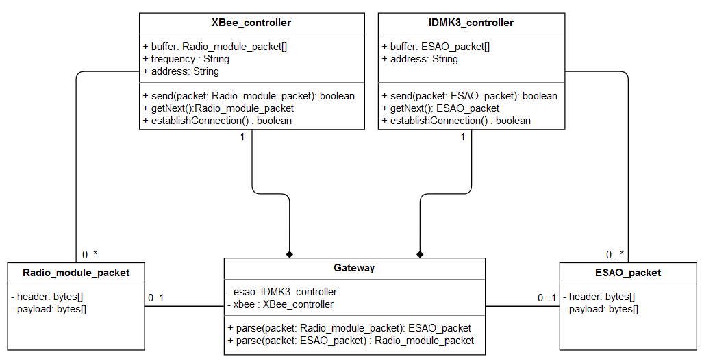

Descriptive part
Context
The client is Sterela who is an Airbus subcontractor. Currently, Airbus is testing each plane on the ground before
their first start-up. To do this, they need to plug different wires from a computer to different sensors gathered in a box.
A major problem encountered during these tests is the size of the plane.
Indeed, the cockpit of an airplane has a size of several cubic meters while the length of an airplane reaches an average
of 70 meters. This implies the use of many cables, more technicians and more time needed to perform the tests.
Airbus and Sterela want to be able to provide a wireless tool to manage the tests.
So we had to develop a gateway that serves as a translation interface between wireless data exchanges and signals
between a test box and a ESAO (Essais Sol Assistés par Ordinateur in french) workstation. More details are provided afterwards.
Specifications
The general architecture in which our gateway was integrated is given below.

Our project was to develop the gateway whose characteristics were:
- Communicate with the radio module to be able to transmit/receive radio frames (communication with the connected tooling)
- Extract useful information received (payload which corresponds to the data measured by the tooling)
contained in the received frame
- Communicate with ESAO workstation to enable:
¤ sending measurement data (performed by the connected tool) to the ESAO system.
¤ sending orders from the ESAO system to the connected tooling.
- Provide associated documentation (i.e., architecture folder, user manual)
Technologies
At the hardware level, we used a computer with Ubuntu as an operating system, the programming environment being easier
for us since we had done many labs on this OS.
Regarding the communication device from the gateway to the aircraft tooling, we chose an XBee module mounted with
its adapter to allow the USB connection with the machine.
Now regarding the software part, we need to choose tools to facilitate our software development, the management of source code files but also to satisfy the requirements in terms of telecommunications compatibility.
We used the Qt API (Application Programming Interface) for our software development because it provides several libraries.
Indeed, for network development, it is interesting for the UDP management between the workstation and our gateway.
Furthermore, it allows the portability so we can run on different OS.
Then the programming language chosen is C++. It has many functionalities, and it is mainly used in Qt. It also allows the portability of the source files.
For a good management of our source code, we decide to use the version control system Git.
It is interesting because everyone has access to the source project and can edit each file at any time and then push on the
branch. Moreover, we can easily return to previous versions if necessary.
For more details, see our project report here.
Technical part
Wireless IO tool
With one colleague, I was in charge of the communication between our gateway and the ESAO worksation.
Indeed on one hand we have the emission of commands from the ESAO to the test box (by way of the gateway).
On the other hand, we have the test box response retrieved by the gateway which send it to the ESAO workstation.
The communcation protocol is the IDMK3 which is based on UDP transport protocol.
As we can see on the class diagram, we need to create two important classes:
- The IDMK3_Controller used to store ESAO packets inside
a buffer, make operations like sending packets and getting new packets from the workstation.
Moreover it is able to establish the connection between the gateway and the workstation.
- The ESAO_packet which represent the format of the frames exchanged (header(s) + payload)

I started by making a first version of communication via the UDP protocol using Qt network libraries.
I did this work in C++ language. Having already carried out the implementation of the UDP protocol in a C-network
project, I already had knowledge in the implementation stages. However, we used the principle of sockets.
So I had to initially soak up the different classes and functions offered by the libraries of Qt in order to
succeed in setting up the UDP communication.
Work to analyze and understand the documentation (provided by Sterela) regarding the different types of commands of the
ESAO workstation as well as the IDMK3 protocol were important to effectively design our classes.
Then, it was necessary to test with an address the sending of orders in ESAO packages (then translated by the gateway).
It was therefore necessary to ensure that the data was formatted correctly
(i.e., that they instantiated the ESAO_packet class).
Further details are provided in our technical report here.
English course
The English course is directly linked to our innovative project.
During the sessions we worked on communication skills, how to improve our oral skills and
how to communicate scientific knowledge in written and spoken forms.
An essential aspect was practiced: knowing how to justify concretely its choices especially
in the design of the prototype, the choice of the software development environment, etc..
These aspects were important and very useful to draft the project reviews our final project report.
In addition, it allowed us to build our final presentation of the prototype using language adapted
to the type of audience that would attend our presentation.
Analytical part
We were able to acquire the essential skills of an engineer today.
Indeed, I was able to experiment project management again but this time on an academic project for important
clients such as Sterela and Airbus. Moreover, an excellent distribution of tasks according to the background
of each one made it possible to move forward effectively on the project.
We worked carefully on the hardware and software designs, with in particular a strong consultation with the client
through weekly meetings which allowed us to justify our technological choices and possibly to see with them whether
they had architecture-level preferences.
I also played the role of client relations, to keep him informed of our progress and possible remarks, which allowed
me to improve my communication capabilities.
Furthermore, our Proof-of-Concept was achieved on time, which allow us to make some relevant tests of robustness.